Lecture 2 Sequences, limits, continuity, and derivatives
Learning objectives
- Define sequences
- Distinguish convergence and divergence
- Define limits
- Define continuity
- Calculate limits of sequences and functions
- Define the slope of a line
- Summarize tangent lines, rates of change, and derivatives
- Define derivative rules for common functions
- Apply the product, quotient, and chain rules for differentiation
- Summarize the exponential function and natural logarithms
- Identify properties of derivatives helpful to statistical methods
Supplemental readings
- Chapter 5-7, 9, Pemberton and Rau (2011)
- OpenStax Calculus: Volume 1, ch 2-4
- OpenStax Calculus: Volume 2, ch 5
2.1 Sequence
2.1.1 Definition
Definition 2.1 (Sequence) A sequence is a function whose domain is the set of positive integers
We’ll write a sequence as,
\[\left\{u_{n} \right\}_{n=1}^{\infty} = (u_{1} , u_{2}, \ldots, u_{N}, \ldots )\]
2.1.2 Examples
\[\left\{\frac{1}{n} \right\} = (1, 1/2, 1/3, 1/4, \ldots, 1/N, \ldots, )\]
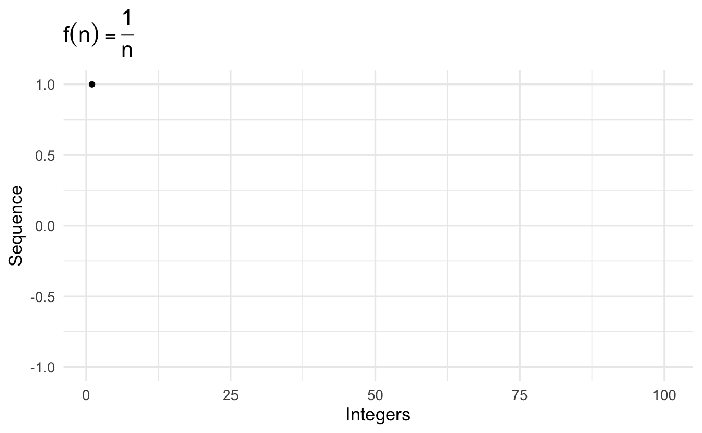
\[\left\{\frac{1}{n^2} \right\} = (1, 1/4, 1/9, 1/16, \ldots, 1/N^2, \ldots, ) \\\]
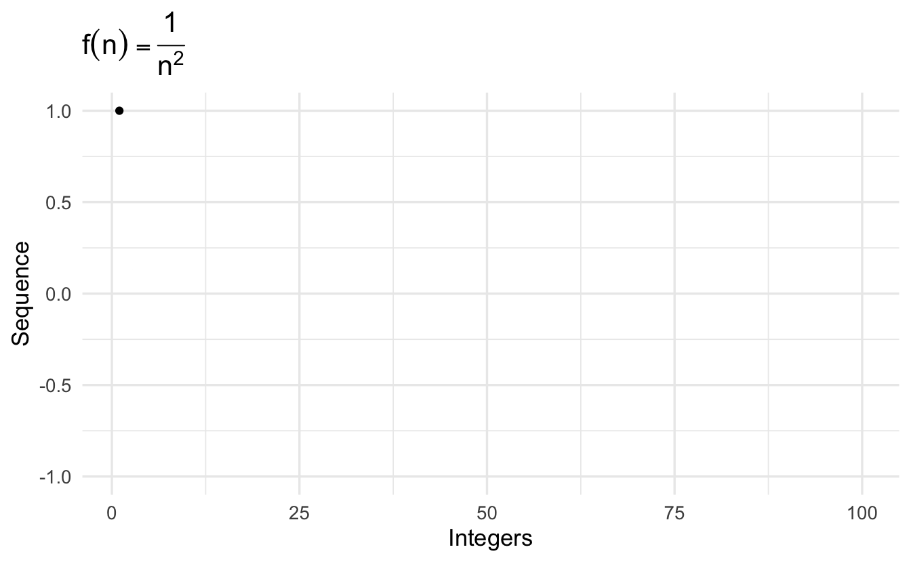
\[\left\{\frac{1 + (-1)^n}{2} \right\} = (0, 1, 0, 1, \ldots, 0,1,0,1 \ldots, ) \\\]
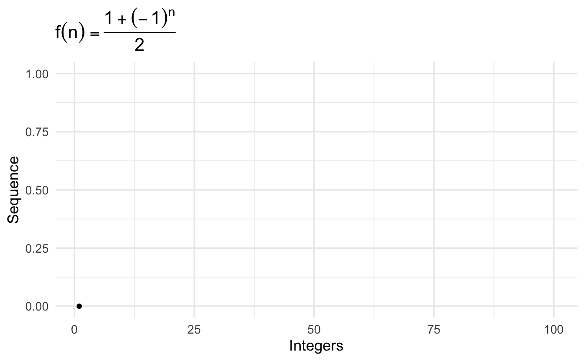
2.1.3 Arithmetic and geometric progressions
Definition 2.2 (Arithmetic progression) An arithmetic progression is a sequence \(\{ u_n \}\) with the property that the difference between each pair of successive terms is the same: \(u_{n+1} - u_n\) is the same for all \(n\). The arithmetic progression with first term \(a\) and common difference \(d\) is
\[a, a + d, a + 2d, a +3d, \ldots\]
The \(n\)th term is given by
\[u_n = a + (n-1)d\]
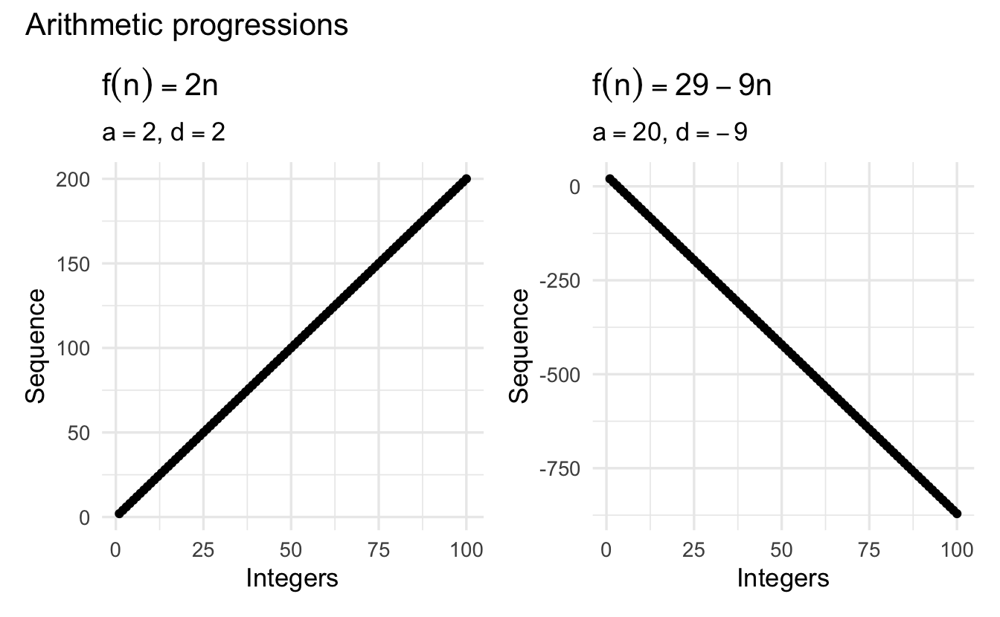
Definition 2.3 (Geometric progression) A geometric progression is a sequence \(\{ u_n \}\) in which each term is obtained from the preceding one by multiplication by the same number: the ratio \(\frac{u_{n+1}}{u_n}\) is the same for all \(n\). The geometric progression with first term \(a\) and common ratio \(x\) is
\[a, ax, ax^2, ax^3, \ldots\]
The \(n\)th term is given by
\[u_n = ax^{n-1}\]
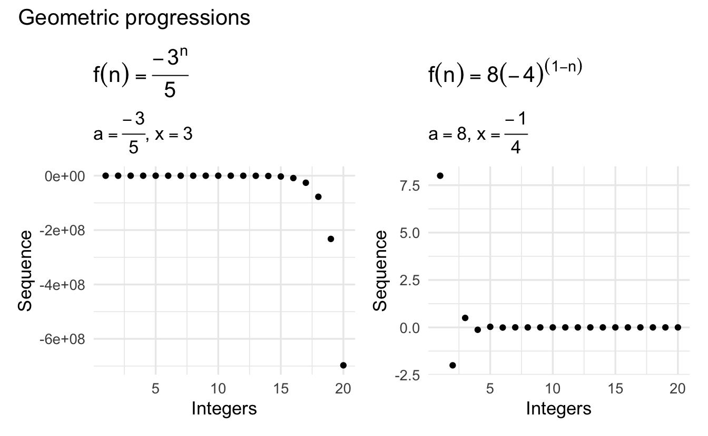
Illustrative of a principal of convergence. Some applications of geometric progressions occur in economics (e.g. compounding interest).
2.1.4 Convergence
Consider the sequence:
\[\left\{\frac{(-1)^{n} }{n} \right \} = (-1, \frac{1}{2}, \frac{-1}{3}, \frac{1}{4}, \frac{-1}{5}, \frac{1}{6}, \frac{-1}{7}, \frac{1}{8}, \ldots )\]
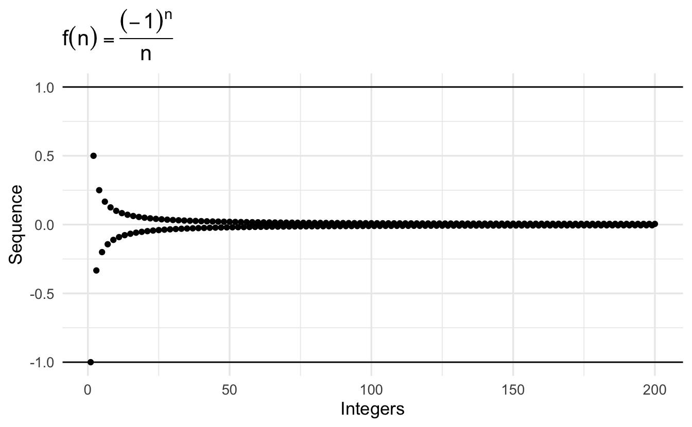
Definition 2.4 (Convergence) A sequence \(\left\{u_{n} \right\}_{n=1}^{\infty}\) converges to a real number \(A\) if for each \(\epsilon >0\) there is a positive integer \(N\) such that for all \(n \geq N\) we have \(|u_{n} - A| < \epsilon\).
- If a sequence converges, it converges to one number. We call that \(A\).
- \(\epsilon>0\) is some arbitrary real-valued number. Think about this as our error tolerance. Notice \(\epsilon > 0\).
- As we will see the \(N\) will depend upon \(\epsilon\).
- Implies the sequence never gets further than \(\epsilon\) away from \(A\).
Definition 2.5 (Divergence and Bounded) If a sequence, \(\left\{u_{n} \right\}\) converges we’ll call it convergent. If it doesn’t we’ll call it divergent. If there is some number \(M\) such that, for all \(n\) \(|u_{n}|<M\), then we’ll call it bounded.
An unbounded sequence
\[\left\{ n \right \} = (1, 2, 3, 4, \ldots, N, \ldots )\]
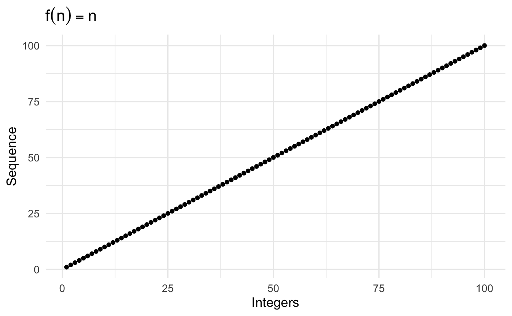
A bounded sequence that doesn’t converge
\[\left\{\frac{1 + (-1)^n}{2} \right\} = (0, 1, 0, 1, \ldots, 0,1,0,1 \ldots, )\]
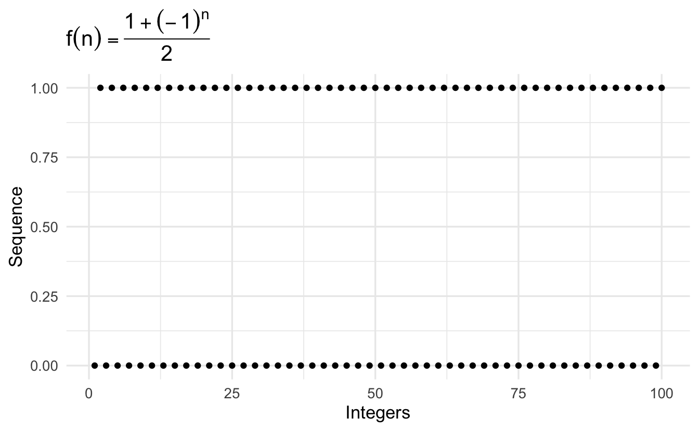
All convergent sequences are bounded. If a sequence is constant, \(\left\{C \right \}\) it converges to \(C\).
2.1.5 Algebra of sequences
How do we add, multiply, and divide sequences?
Theorem 2.1 Suppose \(\left\{a_{n} \right \}\) converges to \(A\) and \(\left\{b_{n} \right\}\) converges to \(B\). Then,
- \(\left\{a_{n} + b_{n} \right\}\) converges to \(A + B\).
- \(\left\{a_{n} b_{n} \right\}\) converges to \(A \times B\).
- Suppose \(b_{n} \neq 0 \forall n\) and \(B \neq 0\). Then \(\left\{\frac{a_{n}}{b_{n}} \right\}\) converges to \(\frac{A}{B}\).
2.1.5.2 Challenge questions
What does \(\left\{3 + \frac{1}{n}\right\}\) converge to?
Click for the solution
\[\lim_{x \rightarrow \infty} \left\{3 + \frac{1}{n}\right\} = 3\]
</p>What about \(\left\{ (3 + \frac{1}{n} ) (100 + \frac{1}{n^4} ) \right\}\)?
Click for the solution
\[ \begin{aligned} \lim_{x \rightarrow \infty} \left\{ (3 + \frac{1}{n} ) (100 + \frac{1}{n^4} ) \right\} &= \lim_{x \rightarrow \infty} \left\{ (3 + \frac{1}{n} ) \right\} \times \lim_{x \rightarrow \infty} \left\{ (100 + \frac{1}{n^4} ) \right\} \\ &= 3 \times 100 \\ &= 300 \end{aligned} \]
</p>Finally, \(\left\{ \frac{ 300 + \frac{1}{n} }{100 + \frac{1}{n^4}} \right\}\)?
Click for the solution
\[ \begin{aligned} \lim_{x \rightarrow \infty} \left\{ \frac{ 300 + \frac{1}{n} }{100 + \frac{1}{n^4}} \right\} &= \frac{300}{100} \\ &= 3 \end{aligned} \]
</p>
2.2 Limits
2.2.1 Sequences \(\leadsto\) limits of functions
- Calculus/Real Analysis: study of functions on the real line
- Limit of a function: how does a function behave as it gets close to a particular point?
Relevant to our understanding and application of:
- Derivatives
- Asymptotics
- Game Theory
2.2.2 Limits of functions
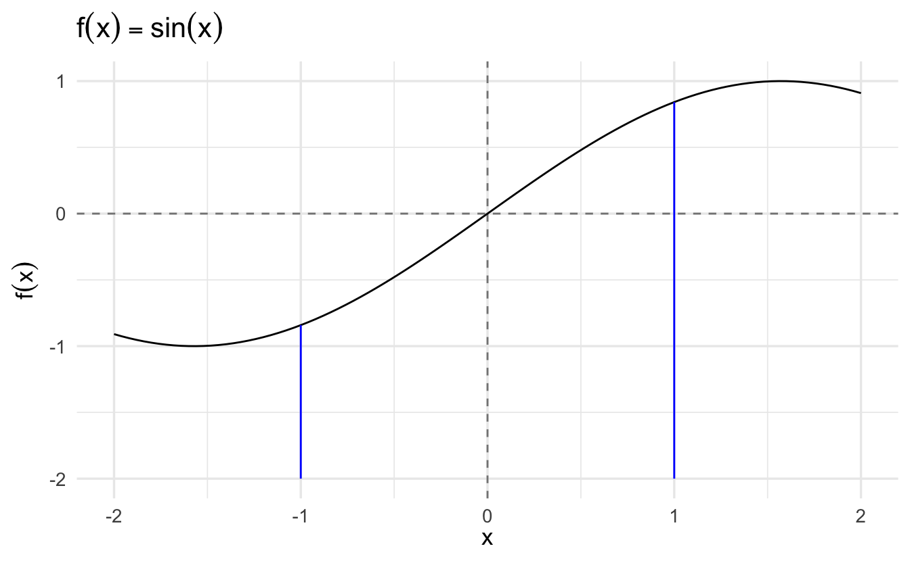
Definition 2.6 (Limit of a function) Suppose \(f: \Re \rightarrow \Re\). We say that \(f\) has a limit \(L\) at \(x_{0}\) if, for \(\epsilon>0\), there is a \(\delta>0\) such that
\[|f(x) - L| < \epsilon \, \forall \, x \backepsilon 0 < |x - x_0 | < \delta\]
\[|f(x) - L| < \epsilon \, \text{for all} \, x \, \text{such that} \, 0 < |x - x_0 | < \delta\]
Limits are about the behavior of functions at points. Here \(x_{0}\). As with sequences, we let \(\epsilon\) define an error rate. \(\delta\) defines an area around \(x_{0}\) where \(f(x)\) is going to be within our error rate.
2.2.3 Examples of limits
Theorem 2.2 The function \(f(x) = x + 1\) has a limit of \(1\) at \(x_{0} = 0\).
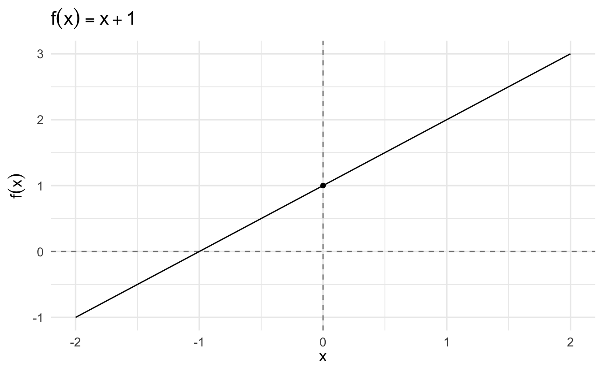
Proof. Without loss of generalization (WLOG) choose \(\epsilon >0\). We want to show that there is \(\delta_{\epsilon}\) such that \(|f(x) - 1| < \epsilon \, \text{for all} \, x \, \text{such that} \, 0 < |x - x_0 | < \delta\). In other words,
\[ \begin{aligned} |(x + 1) - 1| < \epsilon \, \text{for all} \, x \, &\text{such that} \, 0 < |x - 0 | < \delta \\ |x| < \epsilon \, \text{for all} \, x \, &\text{such that} \, 0 < |x | < \delta \\ \end{aligned} \]
But if \(\delta_{\epsilon} = \epsilon\) then this holds, we are done.
A function can have a limit of \(L\) at \(x_{0}\) even if \(f(x_{0} ) \neq L\)(!)
Theorem 2.3 The function \(f(x) = \frac{x^2 - 1}{x - 1}\) has a limit of \(2\) at \(x_{0} = 1\).
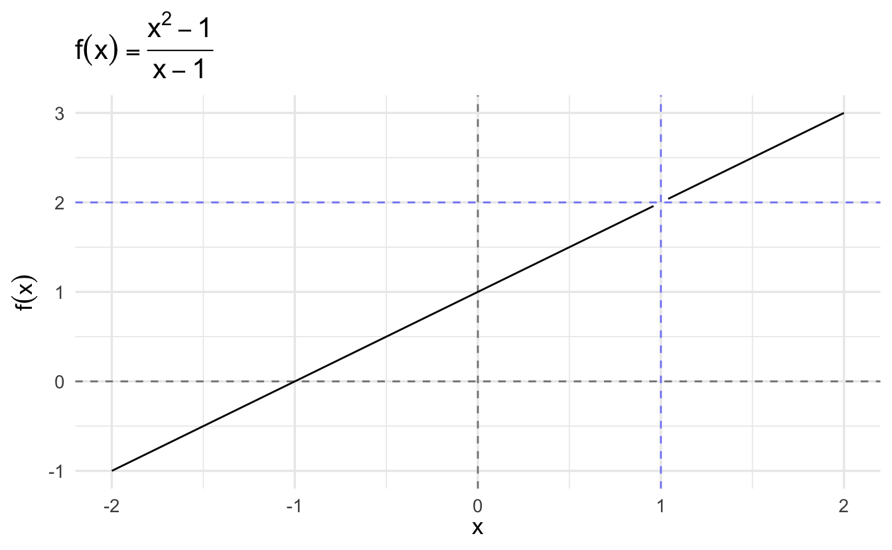
Proof. For all \(x \neq 1\),
\[ \begin{aligned} \frac{x^2 - 1}{x - 1} & = \frac{(x + 1)(x - 1) }{x - 1} \\ & = x + 1 \end{aligned} \]
Choose \(\epsilon >0\) and set \(x_{0}=1\). Then, we’re looking for \(\delta_{\epsilon}\) such that
\[ \begin{aligned} |(x + 1) -2 | < \epsilon \, \text{for all} \, x \, &\text{such that} \, 0 < |x - 1 | < \delta \\ |x - 1 | < \epsilon \, \text{for all} \, x \, &\text{such that} \, 0 < |x - 1 | < \delta \\ \end{aligned} \]
Again, if \(\delta_{\epsilon} = \epsilon\), then this is satisfied.
2.2.4 Not all functions have limits
Theorem 2.4 Consider \(f:(0,1) \rightarrow \Re\), \(f(x) = \frac{1}{x}\). \(f(x)\) does not have a limit at \(x_{0}=0\)

Proof. Choose \(\epsilon>0\). We need to show that there does not exist
\[ \begin{aligned} |\frac{1}{x} - L| < \epsilon \, \text{for all} \, x \, &\text{such that} \, 0 < |x - 0 | < \delta \\ |\frac{1}{x} - L| < \epsilon \, \text{for all} \, x \, &\text{such that} \, 0 < |x| < \delta \\ \end{aligned} \]
But, there is a problem. Because
\[ \begin{aligned} \frac{1}{x} - L & < \epsilon \\ \frac{1}{x} & < \epsilon + L \\ x & > \frac{1}{L + \epsilon} \end{aligned} \]
This implies that there can’t be a \(\delta\), because \(x\) has to be bigger than \(\frac{1}{L + \epsilon}\).
2.2.5 Intuitive definition of a limit
Definition 2.7 (Limit) If a function \(f\) tends to \(L\) at point \(x_{0}\) we say it has a limit \(L\) at \(x_{0}\) we commonly write,
\[\lim_{x \rightarrow x_{0}} f(x) = L\]
Definition 2.8 (Right and left-hand limits) If a function \(f\) tends to \(L\) at point \(x_{0}\) as we approach from the right, then we write
\[\lim_{x \rightarrow x_{0}^{+} } f(x) = L\]
and call this a right hand limit.
If a function \(f\) tends to \(L\) at point \(x_{0}\) as we approach from the left, then we write
\[\lim_{x \rightarrow x_{0}^{-} } f(x) = L\]
and call this a left-hand limit.
2.2.6 Algebra of limits
Theorem 2.5 Suppose \(f:\Re \rightarrow \Re\) and \(g: \Re \rightarrow \Re\) with limits \(A\) and \(B\) at \(x_{0}\). Then,
\[ \begin{aligned} \text{i.) } \lim_{x \rightarrow x_{0} } (f(x) + g(x) ) & = \lim_{x \rightarrow x_{0}} f(x) + \lim_{x \rightarrow x_{0}} g(x) = A + B \\ \text{ii.) }\lim_{x \rightarrow x_{0} } f(x) g(x) & = \lim_{x \rightarrow x_{0}} f(x) \lim_{x\rightarrow x_{0}} g(x) = A B \end{aligned} \]
Suppose \(g(x) \neq 0\) for all \(x \in \Re\) and \(B \neq 0\) then \(\frac{f(x)}{g(x)}\) has a limit at \(x_{0}\) and
\[\lim_{x \rightarrow x_{0}} \frac{f(x)}{g(x)} = \frac{\lim_{x\rightarrow x_{0} } f(x) }{\lim_{x \rightarrow x_{0} } g(x) } = \frac{A}{B}\]
2.3 Continuity
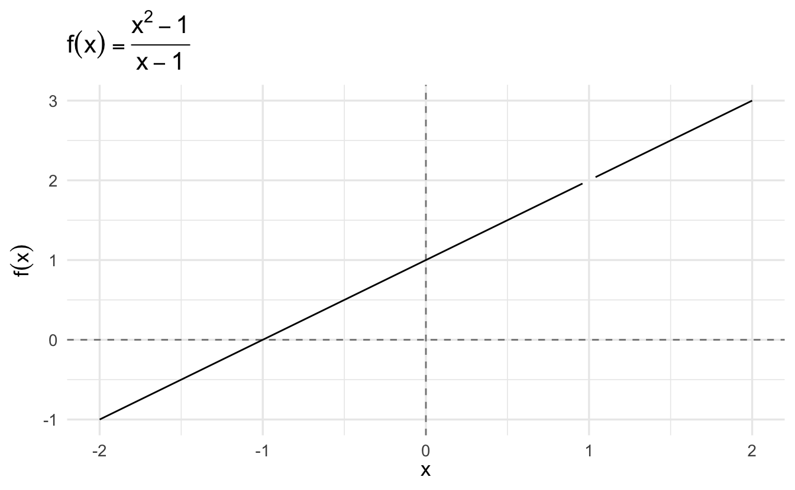
In the example above, a limit exists at 1. But there is a hole in the function. The function fails the pencil test, discontinuous at 1.
Definition 2.9 (Pencil test) Imagine drawing a whole function with a pencil. If you can do it without lifting the pencil off the paper, the function is continuous. If you have to lift the pencil off, even for one single point, the function is discontinuous.5
2.3.1 Defining continuity
Definition 2.10 Suppose \(f:\Re \rightarrow \Re\) and consider \(x_{0} \in \Re\). We will say \(f\) is continuous at \(x_{0}\) if for each \(\epsilon>0\) there is a \(\delta>0\) such that if,
\[ \begin{aligned} |x - x_{0} | & < \delta \text{ for all } x \in \Re \text{ then } \nonumber \\ |f(x) - f(x_{0})| & < \epsilon \nonumber \end{aligned} \]
Previously \(f(x_{0})\) was replaced with \(L\). Now \(f(x)\) has to converge on itself at \(x_{0}\). Continuity is more restrictive than a limit.
2.3.2 A real-world example of limits: Measuring incumbency advantage
Incumbency advantage is the overall causal impact of being the current incumbent party in a district on the votes obtained in the district’s election. In Lee (2008), the unit of analysis is the congressional district for U.S. House of Representatives. In the United States, incumbent parties win at a consistently high rate in elections to the U.S. House (\(>90\%\) win rate).
Incumbent candidates also have a high win rate, though a bit smaller due to retirement (\(\approx 88\%\) probability of running for reelection, \(\approx 90\%\) probability of winning conditional on running for election). Compare this to the runner-up – only a \(3\%\) chance of winning the next election, and only \(20\%\) chance of running in the next election.
Is there an electoral advantage to incumbency? That is, we expect incumbents use privileges and resources of office to gain an “unfair” advantage over potential challengers. Therefore there is an electoral advantage to incumbency – winning has a causal influence on the probability that the candidate will run for office again and eventually win the next election.
Can this be proven through observational study? No – we cannot compare incumbent and non-incumbent electoral outcomes. What if all of the difference between win probabilities is a selection effect – incumbents are, by definition, those politicians who were successful in the previous election – and therefore incumbency is not the cause of the advantage?
2.3.2.1 Ideal experiment
- Randomly assign incumbent parties in a district between Democrats and Republicans
- Keep all other factors constant
- Corresponding increase in Democratic/Republican electoral success in the next election would represent the overall electoral benefit due to being the incumbent party in the district
- Obviously not realistic
2.3.2.2 Regression discontinuity design
- RDDs - dichotomous treatment that is a deterministic function of a single, continuous covariate
- Treatment is assigned to those individuals whose score crosses a known threshold.
- If you know the score, you can reverse-engineer the treatment assignment and assume as-if random assignment in the local neighborhood around a probability of \(50\%\).
In the context of incumbency advantage, consider that whether or not the Democrats are the incumbent party in a Congressional district is a deterministic function of their vote share in the prior election. Democrats are the incumbent party whenever their two-party margin of victor is greater than \(0\). So it is plausible that within a local range of that value, district assignment to Democrats or Republicans is as-if random. Any differences in the estimated probability of winning the election can be attributed to the effect of incumbent parties.

Figure 2.1: Source: Randomized experiments from non-random selection in U.S. House elections. Lee (2008).
As apparent from the figure, there is a large discontinuous jump at the 0 point. Democrats who barely win an election are much more likely to run for office and succeed in the next election, compared to Democrats who barely lose. The causal effect is enormous. Nowhere else is there such a large jump as the function is well-behaved and smooth except for at the threshold determining victory or defeat. This discontinuity is key evidence of a causal effect of incumbency advantage on electoral success.
2.3.3 Continuity and limits
Theorem 2.6 Let \(f: \Re \rightarrow \Re\) with \(x_{0} \in \Re\). Then \(f\) is continuous at \(x_{0}\) if and only if \(f\) has a limit at \(x_{0}\) and that \(\lim_{x \rightarrow x_{0} } f(x) = f(x_{0})\).
Proof. \((\Rightarrow)\). Suppose \(f\) is continuous at \(x_{0}\). This implies that \(|f(x) - f(x_0)| < \epsilon \, \text{for all} \, x \, \text{such that} \, |x - x_0 | < \delta\). This is the definition of a limit, with \(L = f(x_{0})\).
\((\Leftarrow)\). Suppose \(f\) has a limit at \(x_{0}\) and that limit is \(f(x_{0})\). This implies that \(|f(x) - f(x_0)| < \epsilon \, \text{for all} \, x \, \text{such that} \, |x - x_0 | < \delta\). But this is the definition of continuity.
2.3.4 Algebra of continuous functions
Theorem 2.7 Suppose \(f:\Re \rightarrow \Re\) and \(g:\Re \rightarrow \Re\) are continuous at \(x_{0}\). Then,
- \(f(x) + g(x)\) is continuous at \(x_{0}\)
- \(f(x) g(x)\) is continuous at \(x_{0}\)
- if \(g(x_0) \neq 0\), then \(\frac{f(x) } {g(x) }\) is continuous at \(x_{0}\)
2.4 What is calculus?
Calculus is the study of continuous change within functions. Within calculus falls differential calculus (concerning instantaneous rates of change and slopes of curves) and integral calculus (concerning accumulation of quantities and the areas under and between curves), forever intertwined with one another. Calculus has broad applications to mathematical and statistical methods in the social sciences. Calculus is a fundamental part of any type of statistics exercise. Although you may not be taking derivatives and integral in your daily work as an analyst, calculus undergirds many concepts we use: maximization, expectation, and cumulative probability.
Within computational social science, calculus is crucial for finding and identifying extreme values: maxima or minima. This is a process known as optimization, and has uses for both empirical studies as well as formal theory:
- Given data, what is the most likely value of a parameter(s)?
- Game theory: given another player’s strategy, what is the action that maximizes utility?
2.5 Derivatives
2.5.1 How functions change
Derivatives are rates of change in functions. You can think of them as a special type of limit.
2.5.2 The tangent as a limit
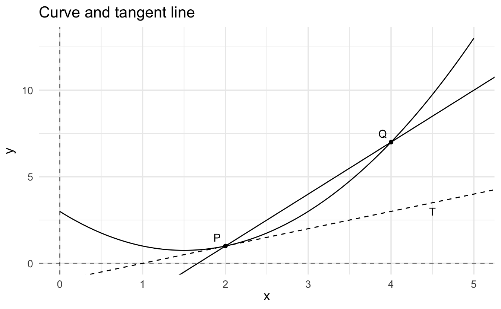
Say \(y = f(x)\) and there is a point \(P\) on the curve. Let \(Q\) be another point on the curve, and let \(L\) be the straight line through \(P\) and \(Q\). You should think of \(L\) as the entire straight line through \(P\) and \(Q\), extending forever in both directions.
Now suppose we move the point \(Q\) along the graph in the direction of \(Q\). If the curve is reasonably smooth, the slope of \(L\) tends to a limit as \(Q\) approaches \(P\), and the limit is the same whether \(P\) is approached from the right or the left. The slope of the curve at \(P\) is the limit of the slope of \(L\) as \(Q\) approaches \(P\).
The tangent to the curve at \(P\), labeled \(T\), is the straight line through \(P\) whose slope is the slope of the curve at \(P\).
We denote the coordinates of \(P\) and \(Q\) by the ordered pairs \((x_0, y_0)\) and \((x_1, y_1)\) respectively. Then
\[\text{slope of } L = \frac{y_1 - y_0}{x_1 - x_0}\]We can rewrite this equation to emphasize the fact that \(P\) and \(Q\) both lie on the graph \(y = f(x)\). Let \(h = x_1 - x_0\). Then
\[x_1 = x_0 + h, \quad y_0 = f(x_0), \quad y_1 = f(x_0 + h)\]
and
\[\text{slope of } L = \frac{f(x_0 + h) - f(x_0)}{h}\]
To say that \(Q\) approaches \(P\) along the curve is the same as saying that \(h\) approaches \(0\). Thus the slope at the point \(P\) of the graph \(y = f(x)\) is the limit of the right-hand side as \(h\) approaches \(0\).
2.5.3 Derivative
Suppose \(f:\Re \rightarrow \Re\). Measure rate of change at a point \(x_{0}\) with a function \(R(x)\),
\[ R(x) = \frac{f(x) - f(x_{0}) }{ x- x_{0} } \]
\(R(x)\) defines the rate of change. A derivative will examine what happens with a small perturbation at \(x_{0}\).
Definition 2.11 (Derivative) Let \(f:\Re \rightarrow \Re\). If the limit
\[ \begin{aligned} \lim_{x\rightarrow x_{0}} R(x) & = \frac{f(x) - f(x_{0}) }{x - x_{0}} \\ & = f^{'}(x_{0}) \end{aligned} \]
exists then we say that \(f\) is differentiable at \(x_{0}\). If \(f^{'}(x_{0})\) exists for all \(x \in \text{Domain}\), then we say that \(f\) is differentiable.
Let \(f\) be a function whose domain includes an open interval containing the point \(x\). The derivative of \(f\) at \(x\) is given by
\[ \frac{d}{dx}f(x) =\lim\limits_{h\to 0} \frac{f(x+h)-f(x)}{(x+h)-x} = \lim\limits_{h\to 0} \frac{f(x+h)-f(x)}{h} \]
There are two main ways to denote a derivate:
- Leibniz Notation: \(\frac{d}{dx}(f(x))\)
- Prime or Lagrange Notation: \(f'(x)\)
If \(f(x)\) is a straight line, the derivative is the slope. For a curve, the slope changes by the values of \(x\), so the derivative is the slope of the line tangent to the curve at \(x\).
Figure 2.2: The Derivative as a Slope
If \(f'(x)\) exists at a point \(x_0\), then \(f\) is said to be differentiable at \(x_0\). That also implies that \(f(x)\) is continuous at \(x_0\).
2.5.4 Rates of change in a function
Another framework is to consider the function \(y = f(x)\). As \(x\) changes from \(x_0\) to \(x_0 + h\), the value of the function changes from \(f(x_0)\) to \(f(x_0 + h)\). Thus the change in \(x\) is \(h\), the change in \(f(x)\) is \(f(x_0 + h) - f(x_0)\), and the rate of change of \(f(x)\) is defined to be
\[\frac{f(x_0 + h) - f(x_0)}{h}\]
We define the rate of change of \(f(x)\) at \(x=x_0\) to be the limit, as \(h \rightarrow 0\), of the rate of change of \(f(x)\) as \(x\) changes from \(x_0\) to \(x_0 + h\). This is equivalent to the derivative \(f'(x_0)\).
Consider an example looking at the relationship between campaign spending and a candidate’s vote share in a congressional election:
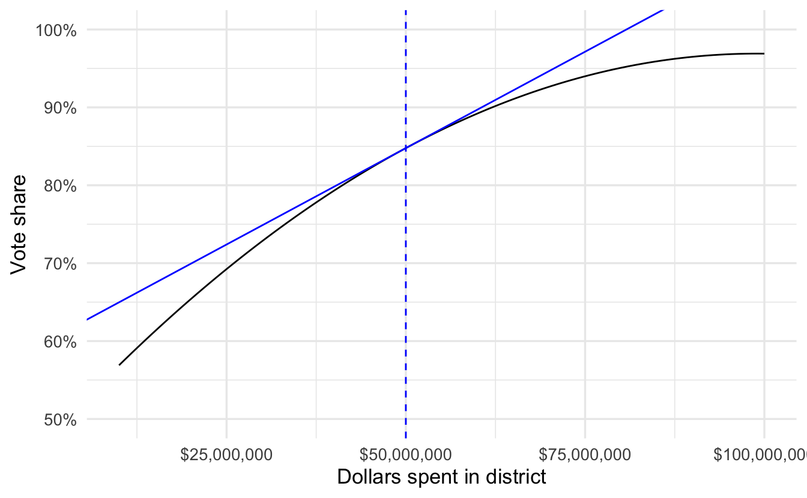
- Rate of change \(\leadsto\) return on vote share on dollars invested
- Instantaneous rate of change \(\leadsto\) increase in vote share in response to infinitesimally small increase in spending
- A type of limit
2.5.5 Examples of derivatives
Example 2.1 Suppose \(f(x) = x^2\) and consider \(x_{0} = 1\). Then,
\[ \begin{aligned} \lim_{x\rightarrow 1}R(x) & = \lim_{x\rightarrow 1} \frac{x^2 - 1^2}{x - 1} \\ & = \lim_{x\rightarrow 1} \frac{(x- 1)(x + 1) }{ x- 1} \\ & = \lim_{x\rightarrow 1} x + 1 \\ & = 2 \end{aligned} \]
Example 2.2 Suppose \(f(x) = |x|\) and consider \(x_{0} = 0\). Then,
\[ \lim_{x\rightarrow 0} R(x) = \lim_{x\rightarrow 0} \frac{ |x| } {x} \]
\(\lim_{x \rightarrow 0^{-}} R(x) = -1\), but \(\lim_{x \rightarrow 0^{+}} R(x) = 1\). So, not differentiable at \(0\).
2.5.6 Continuity and derivatives
\(f(x) = |x|\) is continuous but not differentiable. This is because the change is too abrupt. This suggests differentiability is a stronger condition.
Theorem 2.8 Let \(f:\Re \rightarrow \Re\) be differentiable at \(x_{0}\). Then \(f\) is continuous at \(x_{0}\).
2.5.7 What goes wrong?
Consider the following piecewise function:
\[ \begin{aligned} f(x) & = x^{2} \text{ for all } x \in \Re \setminus 0 \\ f(x) & = 1000 \text{ for } x = 0 \end{aligned} \]
Consider its derivative at 0. Then,
\[ \begin{aligned} \lim_{x \rightarrow 0 } R(x) & = \lim_{x \rightarrow 0 } \frac{f(x) - 1000}{ x - 0 } \\ &= \lim_{x \rightarrow 0 } \frac{x^2}{x} - \lim_{x \rightarrow 0 } \frac{1000}{x} \end{aligned} \]
\(\lim_{x \rightarrow 0 } \frac{1000}{x}\) diverges, so the limit doesn’t exist.
2.6 Calculating derivatives
Rarely will we take a limit to calculate a derivative. Rather, rely on rules and properties of derivatives. Our strategy:
- Algebra theorems
- Some specific derivatives
- Work on problems
2.6.1 Derivative rules
Suppose \(a\) is some constant, \(f(x)\) and \(g(x)\) are functions:
\[ \begin{aligned} f(x) &= x & \quad f^{'}(x) &= 1 \\ f(x) &= a x^{k} & \quad f^{'}(x) &= (a) (k) x ^{k-1} \\ f(x) &= e^{x } & \quad f^{'} (x) &= e^{x} \\ f(x) &= \sin(x) & \quad f^{'} (x) &= \cos (x) \\ f(x) &= \cos(x) & \quad f^{'} (x) &= - \sin(x) \\ \end{aligned} \]
Suppose that \(f\) and \(g\) are functions that are differentiable at \(x\) and \(k\) is a scalar value. The following rules apply:
Definition 2.12 (Constant rule) \[\left[k f(x)\right]' = k f'(x)\]
Definition 2.13 (Sum rule) \[\left[f(x)\pm g(x)\right]' = f'(x)\pm g'(x)\]
Definition 2.14 (Product rule) \[\left[f(x)g(x)\right]' = f'(x)g(x)+f(x)g'(x)\]
Definition 2.15 (Quotient rule) \[\frac{f(x)}{g(x)}' = \frac{f'(x)g(x)-f(x)g'(x)}{[g(x)]^2}, g(x)\neq 0\]
Definition 2.16 (Power rule) \[\left[x^k\right]' = k x^{k-1}\]
These “rules” become apparent by applying the definition of the derivative above to each of the things to be “derived”, but these come up so frequently that it is best to repeat until it is muscle memory.
2.6.2 Challenge problems
Differentiate the following functions and evaluate at the specified value:
\(f(x)= x^3 + 5 x^2 + 4 x\), at \(x_{0} = 2\)
Click for the solution
Power rule.
\[ \begin{aligned} f'(x) &= 3x^2 + 10x + 4 \\ f'(2) &= 3 \times 2^2 + 10 \times 2 + 4 \\ &= 3 \times 4 + 10 \times 2 + 4 \\ &= 12 + 20 + 4 \\ &= 36 \end{aligned} \]
\(f(x) = \sin(x) x^3\) at \(x_{0} = 2\)
Click for the solution
Application of the product rule and definition of the derivative of \(\sin(x)\).
\[ \begin{aligned} g(x) &= \sin(x) &\quad h(x) &= x^3 \\ g'(x) &= \cos(x) &\quad h'(x) &= 3x^2 \end{aligned} \]
\[ \begin{aligned} f'(x) &= g'(x) h(x) + g(x) h'(x) \\ &= \cos(x) x^3 + \sin(x) 3x^2 \\ &= x^2 (x \cos(x) + 3 \sin(x)) \\ f'(2) &= 2^2 (2 \cos(2) + 3 \sin(2)) \\ &= 4 (2 \cos(2) + 3 \sin(2)) \\ &= 8 \cos(2) + 12 \sin(2) \\ &\approx 7.582 \end{aligned} \]
\(h(x) = \dfrac{e^{x}}{x^3}\) at \(x_0 = 2\)
Click for the solution
Application of the quotient rule and definition of the derivative of \(e^x\).
\[ \begin{aligned} f(x) &= e^x &\quad g(x) &= x^3 \\ f'(x) &= e^x &\quad g'(x) &= 3x^2 \end{aligned} \]
\[ \begin{aligned} h'(x) &= \frac{f'(x)g(x)-f(x)g'(x)}{[g(x)]^2}, g(x)\neq 0 \\ &= \frac{e^x x^3 - e^x 3x^2}{(x^3)^2} \\ &= \frac{e^x x^2 (x - 3)}{x^6} \\ &= \frac{e^x (x - 3)}{x^4}, g(x)\neq 0 \\ h'(2) &= \frac{e^2 (2 - 3)}{2^4} \\ &= \frac{-(e^2)}{16} \\ &\approx \frac{-7.389}{16} \\ &\approx -0.462 \end{aligned} \]
\(h(x) = \log (x) x^3\) at \(x_0 = e\)
Click for the solution
Requires the product rule combined with power rule and knowledge of the derivative of \(\log(x)\).
\[ \begin{aligned} f(x) &= \log(x) &\quad g(x) &= x^3 \\ f'(x) &= \frac{1}{x} &\quad g'(x) &= 3x^2 \end{aligned} \]
\[ \begin{aligned} h'(x) &= f'(x)g(x) + f(x)g'(x) \\ &= \frac{1}{x} \times x^3 + \log(x) \times 3x^2 \\ &= x^2 + 3x^2 \log(x) \\ &= x^2(1 + 3 \log(x)) \\ h'(e) &= e^2(1 + 3 \log(e)) \\ &= e^2 (1 + 3 * 1) \\ &= 4e^2 \end{aligned} \]
2.6.3 Composite functions
As useful as the above rules are, many functions you’ll see won’t fit neatly in each case immediately. Instead, they will be functions of functions. For example, the difference between \(x^2 + 1^2\) and \((x^2 + 1)^2\) may look trivial, but the sum rule can be easily applied to the former, while it’s actually not obvious what do with the latter.
Composite functions are formed by substituting one function into another and are denoted by
\[f \circ g=f[g(x)]\]
To form \(f[g(x)]\), the range of \(g\) must be contained (at least in part) within the domain of \(f\). The domain of \(f\circ g\) consists of all the points in the domain of \(g\) for which \(g(x)\) is in the domain of \(f\).
For example, let \(f(x)=\log x\) for \(0<x<\infty\) and \(g(x)=x^2\) for \(-\infty<x<\infty\).
Then
\[f\circ g=\log x^2, -\infty<x<\infty - \{0\}\]
Also
\[g\circ f = [\log x]^2, 0<x<\infty\]
Notice that \(f\circ g\) and \(g\circ f\) are not the same functions.
With the notation of composite functions in place, now we can introduce a helpful additional rule that will deal with a derivative of composite functions as a chain of concentric derivatives.
2.6.4 Chain rule
Let \(y=f\circ g= f[g(x)]\). The derivative of \(y\) with respect to \(x\) is
\[\frac{d}{dx} \{ f[g(x)] \} = f'[g(x)] g'(x)\]
We can read this as: “the derivative of the composite function \(y\) is the derivative of \(f\) evaluated at \(g(x)\), times the derivative of \(g\).”
The chain rule can be thought of as the derivative of the “outside” times the derivative of the “inside”, remembering that the derivative of the outside function is evaluated at the value of the inside function.
2.6.4.1 Examples of the chain rule
Example 2.3 \[ \begin{aligned} h(x) &= e^{2x} \\ g(x) &= e^{x} \\ f(x) &= 2x \end{aligned} \]
So
\[h(x) = g(f(x)) = g(2x) = e^{2x}\]
Taking derivatives, we have
\[h^{'}(x) = g^{'}(f(x))f^{'}(x) = e^{2x}2\]
Example 2.4 \[ \begin{aligned} h(x) &= \log(\cos(x) ) \\ g(x) &= \log(x) \\ f(x) &= \cos(x) \end{aligned} \]
So
\[h(x) = g(f(x)) = g( \cos(x)) = \log(\cos(x))\]
\[h^{'}(x) = g^{'}(f(x))f^{'}(x) = \frac{-1}{\cos(x)} \sin(x) = -\tan (x)\]
2.7 Derivatives for the exponential function and natural logarithms
The exponential function is one of the most important functions in mathematics.
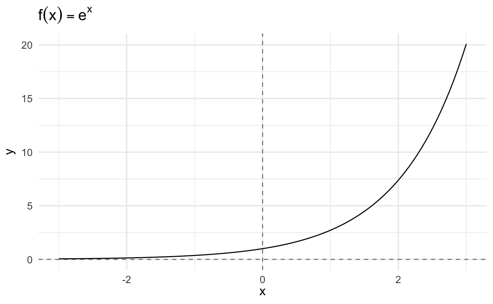
We previously discussed common rules for exponents and logarithms. Here, we focus on the properties of their derivatives.
2.7.1 Derivative of exponential function
The function \(e^x\) is continuous and differentiable in its domains, and its first derivative is
\[\frac{d}{dx}(e^x) = e^x\]
Why is this so? According to the limit definition of a derivative:6
\[ \begin{aligned} \frac{d}{dx}f(x) & = \lim\limits_{h\to 0} \frac{f(x+h)-f(x)}{h} \\ & = \lim\limits_{h\to 0} \frac{e^{x + h} - e^x}{h} \end{aligned} \]
By the law of exponents, we can split the addition of exponents into multiplication of the same base:
\[\frac{d}{dx}f(x) = \lim\limits_{h\to 0} \frac{e^x e^h - e^x}{h}\]
Factor out \(e^x\):
\[\frac{d}{dx}f(x) = \lim\limits_{h\to 0} \frac{e^x(e^h - 1)}{h}\]
We can put \(e^x\) in front of the limit because it is a multiplicative constant (while it has a variable \(x\) term, the limit is as \(h \rightarrow 0\), not \(x \rightarrow 0\)):
\[\frac{d}{dx}f(x) = e^x \lim\limits_{h\to 0} \frac{e^h - 1}{h}\]
As \(h\) approaches \(0\), the limit gets closer to \(\frac{0}{0}\) which is an indeterminant form. If we visually inspect what is happening at that point:
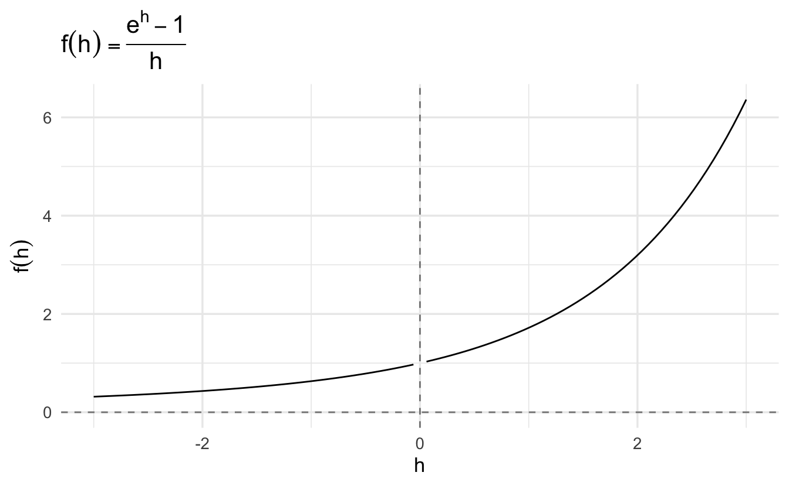
We can clearly see that as \(x\) approaches \(0\), the function is converging towards 1, even if it never actually gets there.7 We can therefore substitute into the equation:
\[ \begin{aligned} \frac{d}{dx}f(x) & = e^x \lim\limits_{h\to 0} \frac{e^h - 1}{h} \\ & = e^x (1) \\ & = e^x \end{aligned} \]
Therefore, \(e^x\) is itself the derivative of \(e^x\).

Figure 2.3: Derivative of the Exponential Function
2.7.2 Derivative of the natural logarithm
The natural logarithm of \(x\) is the logarithm to base \(e\) of \(x\), where \(e\) is defined as Euler’s number (\(e^1 \approx 2.7182818\)):
\[y = \log_e (x) \iff x = e^y\]
There is a direct relationship between \(e^x\) and \(\log_e(x)\) (aka \(\log\) or \(\ln\)):
\[ \begin{aligned} e^{\log(x)} &= x \, \mbox{for every positive number} \, x \\ \log(e^y) &= y \, \mbox{for every real number} \, y \\ \end{aligned} \]
In short, the natural logarithm is the inverse function of the exponential function.
Figure 2.4: Exponential function and natural logarithm
The derivative of a natural logarithm is
\[\frac{d}{dx} \log(x) = \frac{1}{x}\]
This follows from the inverse function rule which states that for a monotonic function \(f\) and its inverse \(g\), their derivatives are related to each other by:
\[ \begin{aligned} g'(y) &= \frac{1}{f'(x)} \\ \frac{dx}{dy} &= \frac{1}{\frac{dy}{dx}} \end{aligned} \]
As well as from the fact that the exponential function is its own derivative. Let \(y = \log(x)\). Then \(x = e^y\), \(\frac{dx}{dy} = e^y = x\), and
\[\frac{dy}{dx} = \frac{1}{\frac{dx}{dy}} = \frac{1}{x}\]
Figure 2.5: Derivative of the Natural Log
2.7.3 Relevance of exponential functions and natural logarithm
The exponential function is popular in economics for growth over time (e.g. compounding interest). Natural logarithms can be used for elasticity models, as well as transforming variables in regression models to appear more normally distributed.
2.8 Derivatives and properties of functions
Derivatives are often used to optimize a function (tomorrow). But they also reveal average rates of change or crucial properties of functions. Here we want to introduce ideas, and hopefully make them less shocking when you see them in work.
2.8.1 Relative maxima, minima and derivatives
Theorem 2.9 (Rolle's theorem) Suppose \(f:[a, b] \rightarrow \Re\). Suppose \(f\) has a relative maxima or minima on \((a,b)\) and call that \(c \in (a, b)\). Then \(f'(c) = 0\).
Intuition:
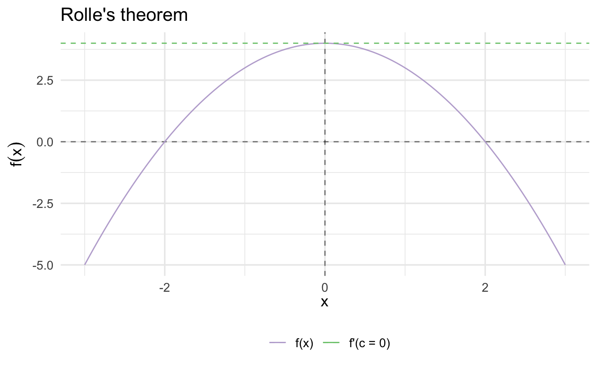
Proof. Consider (without loss of generalization) a relative maximum \(c\). Consider the left-hand and right-hand limits
\[ \begin{aligned} \lim_{x \rightarrow c^{-}} \frac{f(x) - f(c) }{x - c } & \geq 0 \\ \lim_{x \rightarrow c^{+}} \frac{f(x) - f(c) } {x - c } & \leq 0 \end{aligned} \]
But we also know that
\[ \begin{aligned} \lim_{x \rightarrow c^{-}} \frac{f(x) - f(c ) }{x - c } & = f^{'}(c) \\ \lim_{x \rightarrow c^{+}} \frac{f(x) - f(c) } {x - c } & = f^{'}(c) \end{aligned} \]
The only way, then, that
\(\lim_{x \rightarrow c^{-}} \frac{f(x) - f(c) }{x -c} = \lim_{x \rightarrow c^{+}} \frac{f(x) - f(c) } {x - c}\) is if \(f^{'}(c) = 0\).
2.8.2 Mean value theorem
Rolle’s theorem is a special case of the mean value theorem, where \(f'(c) = 0\).
Theorem 2.10 (Mean value theorem) If \(f:[a,b] \rightarrow \Re\) is continuous on \([a,b]\) and differentiable on \((a,b)\), then there is a \(c \in (a,b)\) such that
\[ f^{'}(c) = \frac{f(b) - f(a) } { b - a} \]
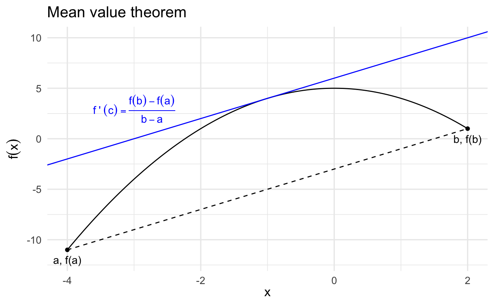
2.8.3 Applications of the mean value theorem
This will come up in a formal theory article. You’ll at least know where to look. It allows us to say lots of powerful stuff about functions, which is especially useful for approximating derivatives.
Corollary 2.1 Suppose that \(f:[a,b] \rightarrow \Re\) is continuous on \([a,b]\) and differentiable on \((a,b)\). Then,
- If \(f^{'}(x) \neq 0\) for all \(x \in (a,b)\) then \(f\) is 1-1
- If \(f^{'}(x) = 0\) then \(f(x)\) is constant
- If \(f^{'}(x)> 0\) for all \(x \in (a,b)\) then then \(f\) is strictly increasing
- If \(f^{'}(x)<0\) for all \(x \in (a,b)\) then \(f\) is strictly decreasing
Let’s prove these in turn. Why? Because they are just applying ideas.
2.8.3.1 If \(f^{'}(x) \neq 0\) for all \(x \in (a,b)\) then \(f\) is 1-1
A one-to-one function is a function for which every element of the range of the function corresponds to exactly one element of the domain.
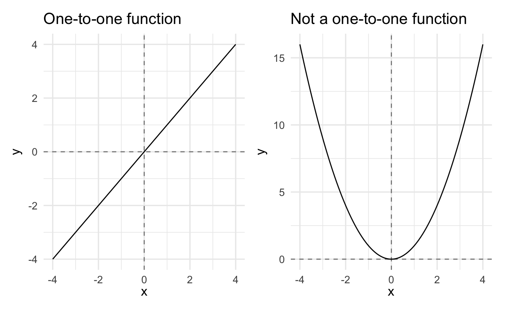
Proof. By way of contradiction, suppose that \(f\) is not 1-1. Then there is \(x, y \in (a,b)\) such that \(f(x) = f(y)\). Then,
\[f'(c) = \frac{f(x) - f(y)}{x- y} = \frac{0}{x -y} = 0\]
This means \(f' \neq 0\) for all \(x\)!
2.8.3.2 If \(f^{'}(x) = 0\) then \(f(x)\) is constant
Proof. By way of contradiction, suppose that there is \(x, y \in (a,b)\) such that \(f(x) \neq f(y)\). But then,
\[f'(c) = \frac{f(x) - f(y) } {x - y} \neq 0\]
2.8.3.3 If \(f^{'}(x)> 0\) for all \(x \in (a,b)\) then then \(f\) is strictly increasing
Proof. By way of contradiction, suppose that there is \(x, y \in (a,b)\) with \(y<x\) but \(f(y)>f(x)\). But then,
\[f'(c) = \frac{f(x) - f(y) }{x - y } < 0\]
- Bonus: proof for strictly decreasing is the reverse of this
2.8.4 Extension to indeterminate form limits
The mean value theorem generalizes to a form known as the Cauchy mean value theorem.
Theorem 2.11 (Cauchy mean value theorem) Suppose \(f\) and \(g\) are differentiable functions and \(a\) and \(b\) are real numbers such that \(a < b\). Suppose also that \(g'(x) \neq 0\) for all \(x\) such that \(a < x < b\). There exists a real number \(c\) such that \(a < c < b\) and
\[\frac{f'(c)}{g'(c)} = \frac{f(b) - f(a)}{g(b) - g(a)}\]
The ordinary mean value theorem is the special case where \(g(x) = x\) for all \(x\).
This is extraordinarily helpful if we want to calculate the limit of a ratio
\[\lim_{x \rightarrow a} \frac{f(x)}{g(x)}\]
where \(f\) and \(g\) are continuous functions. If \(g(a) \neq 0\) then
\[\lim_{x \rightarrow a} \frac{f(x)}{g(x)} = \frac{f(a)}{g(a)}\]
If \(g(a) = 0\) and \(f(a) \neq 0\), no limit exists. But in the case where \(f(a) = g(a) = 0\), we have what is known as an indeterminate form - a limit may or may not exist in this case. Examples of indeterminate forms include \(\frac{0}{0}\) and \(\frac{\infty}{\infty}\).
We can use L’Hôpital’s Rule (derived from the Cauchy mean value theorem) to simplify the expression and solve for the limit.
Theorem 2.12 (L'Hôpital's Rule) Suppose that \(f(a) = g(a) = 0\) and \(g'(x) \neq 0\) if \(x\) is close but not equal to \(a\). Then
\[\lim_{x \rightarrow a} \frac{f(x)}{g(x)} = \lim_{x \rightarrow a} \frac{f'(x)}{g'(x)}\]
provided the limit on the right-hand side exists. This follows from the Cauchy mean value thoerem. Using that theorem and our assumption that \(f(a) = g(a) = 0\), we see that given any \(x\) that is close but not equal to \(a\), there is a number \(p\) between \(a\) and \(b\) such that
\[ \begin{aligned} \frac{f(x) - f(a)}{g(x) - g(a)} &= \frac{f'(p)}{g'(p)} \\ \frac{f(x) - 0}{g(x) - 0} &= \frac{f'(p)}{g'(p)} \\ \frac{f(x)}{g(x)} &= \frac{f'(p)}{g'(p)} \end{aligned} \]
As \(x\) approaches \(a\), so does \(p\).
Example 2.5 \[\lim_{x \rightarrow 0} \frac{(1 + x)^{1/3} - 1}{x - x^2}\]
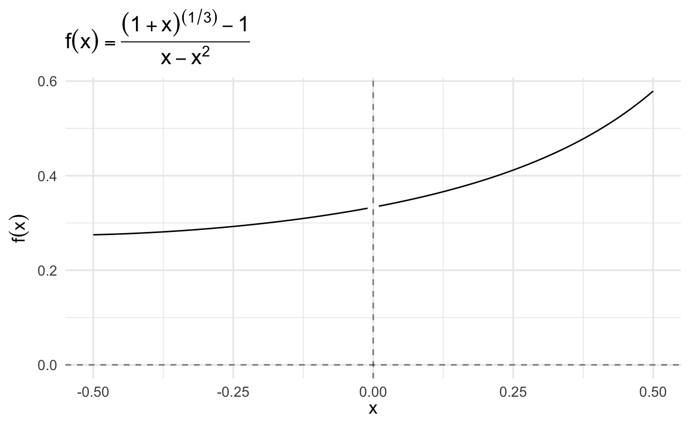
Denote the numerator of the fraction by \(f(x)\) and the denominator by \(g(x)\). Then \(f(0) = g(0) = 0\), so the form is indeterminate. Now
\[ \begin{aligned} f'(x) &= \frac{1}{3} (1 + x)^{-2/3} \\ f'(0) &= \frac{1}{3} (1)^{-2/3} = \frac{1}{3} (1) = \frac{1}{3} \\ g'(x) &= 1 - 2x \\ g'(0) &= 1 - 2(0) = 1 \end{aligned} \]
\[\lim_{x \rightarrow a} \frac{f(x)}{g(x)} = \lim_{x \rightarrow a} \frac{f'(x)}{g'(x)} = \frac{1/3}{1} = \frac{1}{3}\]
Example 2.6 \[l = \lim_{x \rightarrow 0} \frac{x - \log(1 + x)}{x^2}\]
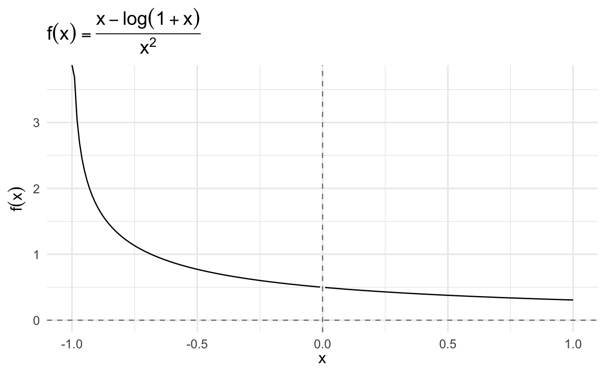
\[ \begin{aligned} f(x) &= x - \log(1 + x) \\ f'(x) &= 1 - \frac{1}{1 + x} \\ g(x) &= x^2 \\ g'(x) &= 2x \end{aligned} \]
\[ \begin{aligned} L &= \lim_{x \rightarrow 0} \frac{1 - \frac{1}{1 + x}}{2x} \\ &= \lim_{x \rightarrow 0} \frac{1}{2x} - \frac{\frac{1}{1 + x}}{2x} \\ &= \lim_{x \rightarrow 0} \frac{1}{2x} - \frac{1}{2x(1 + x)} \\ &= \lim_{x \rightarrow 0} \frac{1(1 + x)}{2x(1 + x)} - \frac{1}{2x(1 + x)} \\ &= \lim_{x \rightarrow 0} \frac{1(1 + x) - 1}{2x(1 + x)} \\ &= \lim_{x \rightarrow 0} \frac{1 + x - 1}{2x(1 + x)} \\ &= \lim_{x \rightarrow 0} \frac{x}{2x(1 + x)} \\ &= \lim_{x \rightarrow 0} \frac{1}{2(1 + x)} \\ &= \lim_{x \rightarrow 0} \frac{1}{2(1 + 0)} = \frac{1}{2} \end{aligned} \]
Letting \(x \rightarrow 0\), we have \(L = \frac{1}{2}\).
Note that instead of simplifying the expression, we could use this approach iteratively.
\[\lim_{x \rightarrow a} \frac{f(x)}{g(x)} = \lim_{x \rightarrow a} \frac{f'(x)}{g'(x)} = \lim_{x \rightarrow a} \frac{f''(x)}{g''(x)} = \ldots\]
\[ \begin{aligned} f''(x) &= \frac{1}{(1 +x)^{2}} \\ g''(x) &= 2 \\ \lim_{x \rightarrow 0} \frac{f''(x)}{g''(x)} &= \frac{(1 + x)^{-2}}{2} = \frac{1^{-2}}{2} = \frac{1}{2} \end{aligned} \]